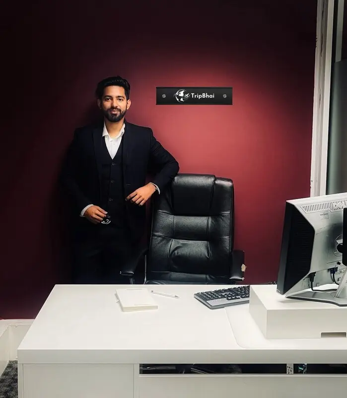
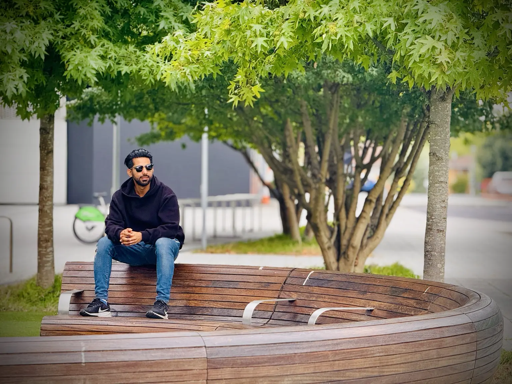
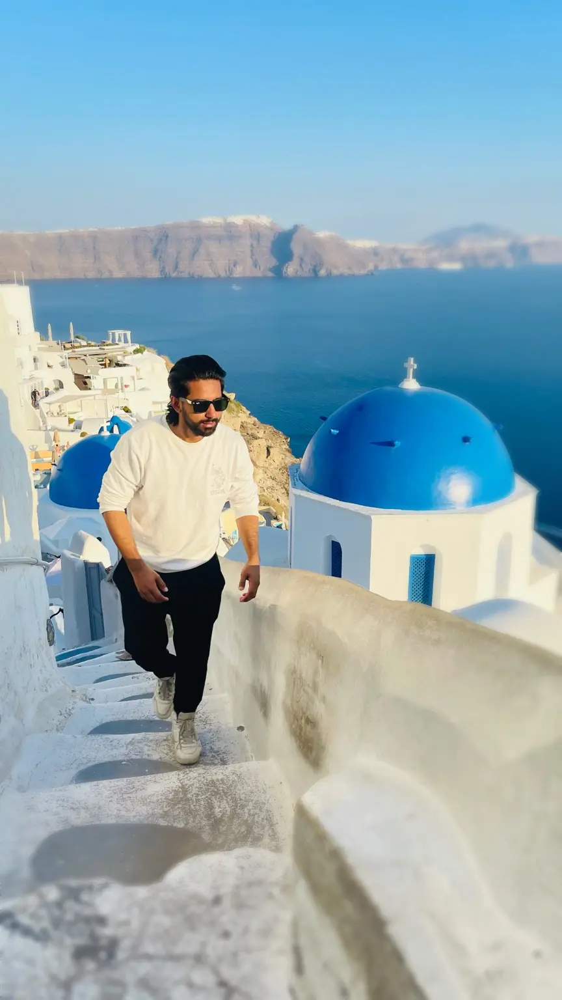
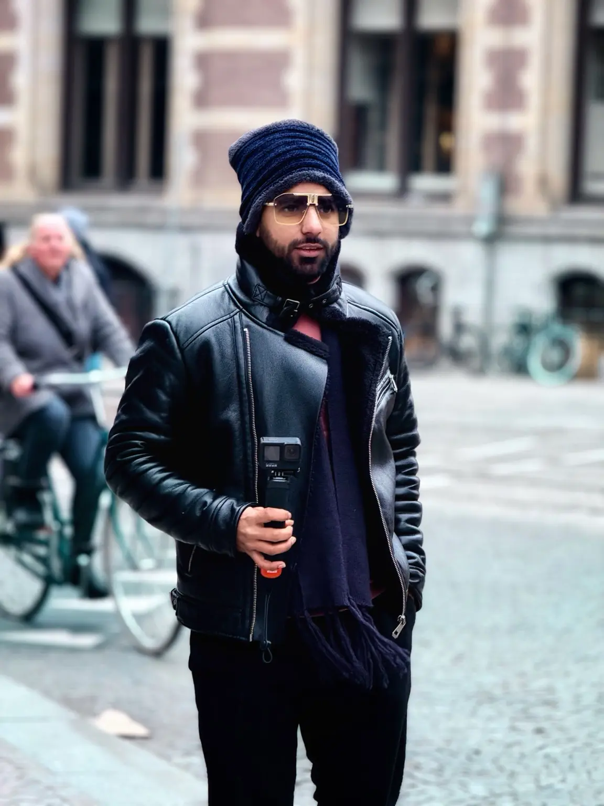

Cybersecurity Engineer
NCC Group · London
Tracing a life across borders
Cybersecurity engineer / researcher / explorer
The 3D world is unavailable on this device. Explore every chapter using the links or scroll into the story.
01 / LONDON
Follow the route from a global perspective into the moments that made it personal.
51.5074° N / 0.1278° W
Your scroll moves the camera ↓
London / Connected to the world
MD ZILLUR RAHMAN SAIMON
I protect systems.
I study intelligence.
I cross borders to exchange ideas.
SUBJECT 001CYBERSECURITY / RESEARCH
01 / THE SIGNAL
Cybersecurity, applied research, conferences and memories — one connected journey.
Identity

Who I am
ZR. Saimun is the public identity of Md Zillur Rahman Saimon — a London-based cybersecurity engineer and researcher whose work moves between secure systems, artificial intelligence and real-world human connection.
NCC Group · London
Published work across IoT, RAG and medical imaging.
Current chapter / London
At NCC Group, the journey enters a sharper phase: cybersecurity as disciplined thinking, responsible defence and continuous learning.
01 Risk-aware engineering
02 Threat-led thinking
03 Secure systems
04 Research into practice
Experience & education
Technical practice, leadership and formal study — shown only where the record is established.
CURRENT
NCC Group · London, United Kingdom
DEC 2022—
Eson Soft IT · Remote from the UK
2022—2024
University of Portsmouth
2017—2021
American International University-Bangladesh
My journey
A moving timeline

CHAPTER 01
CHAPTER 02

CHAPTER 03
CHAPTER 04
CHAPTER 05
Beyond borders
My world, one connection at a time
These destinations come from Saimun’s supplied travel archive, event tickets and photographs. Select a point to reveal its place in the story.
01 / 00
United Kingdom
The current base — where professional practice, research and global routes meet.
Conferences & events
Beyond borders
Each stop meant listening, exchanging ideas, meeting people and carrying a new perspective into the next room.
ZÜRICH · 25 SEP 2024
A professional connection point in Zürich’s technology and startup community.
FRANKFURT · 08 OCT 2024
A TechQuartier event exploring the intersection of two fast-moving fields.
ANACAPRI · 03 OCT 2024
A research-led stop at Centro Congressi Paradiso in Anacapri.
HAMBURG · 27 SEP 2024
Best-practice exchange at Digital Hub Logistics Hamburg.
BASEL · 13 NOV 2024
A hands-on event at ETH Zürich’s Department of Biosystems Science and Engineering in Basel.
MUNICH · 2024
Technology careers, conversations and professional possibilities in Munich.
SYDNEY · 26 FEB 2025
An investment conference at Four Seasons Hotel Sydney.
LONDON · 12 AUG 2024
A City Hall event focused on opportunity inside the games technology sector.
Selected research
Questions become systems
Selected publications verified against the supplied CV, IEEE author record, DOI pages and the author’s research profile.
Retrieval-augmented generation / responsible AI
Open paper ↗ 2026 · IEEE ICICVYOLO variants / deep segmentation
Open DOI ↗ 2025 · IEEEHybrid CNN / medical imaging
Open paper ↗ 2024 · IEEETransfer learning / X-ray imaging
Open DOI ↗ 2023 · MJSATIoT / automation / security
Open DOI ↗ 2022 · EARLY WORKSecure digital education systems
View profile ↗Travel memories
Places that became stories
Drag the film. Select a frame. Every photograph below comes from Saimun’s personal archive.
World atlas
20 chapters / one moving map
Explore the destinations in Saimun’s travel archive. Personal photographs are marked as memories; atmospheric plates are clearly artistic visualisations for places still being documented.

Professional role, education, event attendance, travel history and photographs were supplied by ZR. Saimun. Publication details were cross-checked against the following records. No unverified award, statistic or conference was added.